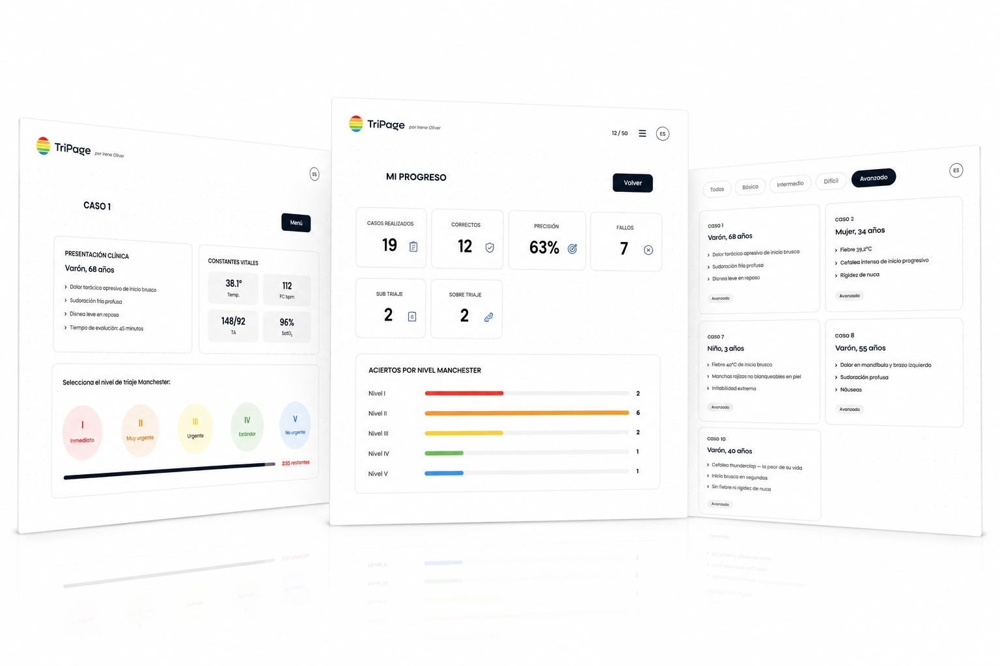

TriPage
Un estudio realizado en 7 hospitales de Asturias reveló que 1 de cada 10 clasificaciones de triaje son incorrectas.
Incluso las enfermeras más experimentadas cometen errores.
El entrenamiento mediante simulación sí mejora la precisión.

¿Por qué construí TriPage?
Estudié enfermería y vi de cerca lo que pasa cuando urgencias colapsa. En una pandemia o catástrofe, el triaje determina quién recibe atención primero. Los datos lo confirman: el 16.4% de las clasificaciones son incorrectas y los años de experiencia no cambian ese número.
Experiencia real
Durante el COVID-19 pude ver lo que ocurre cuando urgencias colapsa.
La experiencia no garantiza un triaje correcto
El estudio realizado demuestra que incluso los profesionales con más experiencia cometen errores. 16 de 100 enfermeras fallaron en el triaje.
Entrenar antes de enfrentarse a un caso real
El estudio confirma que la simulación sí mejora la precisión. Por eso construí TriPage, para que los profesionales puedan entrenar.

El proceso
Investigación
Tras leer el estudio investigué qué herramientas existían para practicar el triaje Manchester. Al hacer benchmarking no encontré nada gratuito, realista y práctico.
Diseño
Empecé en papel probando distintas estructuras: flashcards, preguntas tipo test y casos aleatorios. Decidí filtrar por dificultad en vez de por tipo clínico.
Validación
Le pedí feedback a enfermeras y estudiantes de la UPF. El resultado fue positivo y me ayudó a desarrollar el diseño final. También me ayudaron a validar los casos clínicos.
Herramientas y desarrollo
Debugging y refactoring
Usé Claude para entender errores en la lógica del temporizador y el localStorage, y para revisar y limpiar el código. No para copiar soluciones, para entender qué fallaba y por qué.
Documentación
Me ayudó a escribir el README del proyecto y a estructurar la documentación del código.
Exploración de diseño
Usé ChatGPT para generar distintas versiones de layout, mockups y el logo del proyecto antes de ponerme a codificar. Vi qué quedaba mejor y tomé las decisiones finales desde ahí.
Resultados y aprendizaje obtenidos
Lo que aprendí
Construir TriPage fue donde más aprendí. Tuve que aprender JavaScript de verdad para que funcionara, usar Git para no perderme, documentar para no olvidar lo que había hecho, e integrar IA en el desarrollo como una herramienta más.
Resultados obtenidos
El estudio confirma que el entrenamiento mediante simulación mejora la precisión en el triaje. Por eso TriPage está actualmente en validación con enfermeras y estudiantes de medicina de la UPF. Cuenta con 50 casos clínicos en español e inglés y el siguiente paso es reescribirlo en React.
Lo que dicen los usuarios
"El diseño es muy intuitivo y la interfaz muy interactiva. Se hace fácil practicar sin que se haga pesado."
Alicia
Estudiante de Medicina
"Para alguien como yo, que soy enfermera volante y paso por urgencias de vez en cuando, es muy útil para mantener el nivel."
Ana Antón
Enfermera
"Lo usaré para repasar el ECOE. Los casos son realistas y el nivel de dificultad está bien graduado."
Marina
Estudiante de Medicina